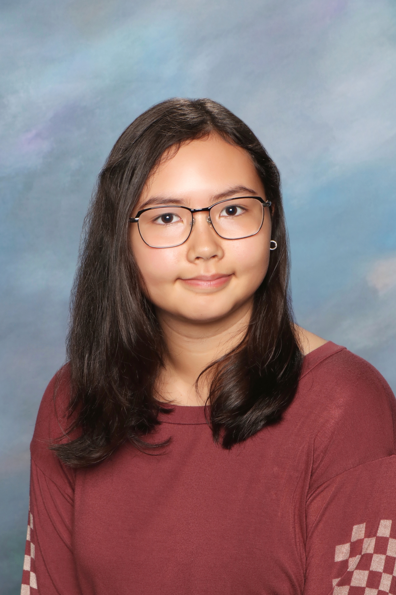

My name is Zia and I am a grade 10 student at Kitsilano. I love doing ceramic and digital art, as well as playing the harp. My favourite things to do in my spare time are listening to music and baking. I am half filipino and half american (white), so I spend most of my school breaks in the United States. Specifically, I am from California, but I have been living in Vancouver for a little over ten years. My family decided to move to Vancouver because of a job offer for my dad.
My dad is a software developer and my mom works on websites. Their jobs made me curious about programming and computers so I decided to take Computer Studies 10. Since joining this course, I have learned a lot about the basics and the layout of Windows computers. Additionaly, I learned about what it takes to create computer games with GameMaker, while also learning about how to design enjoyable games.
